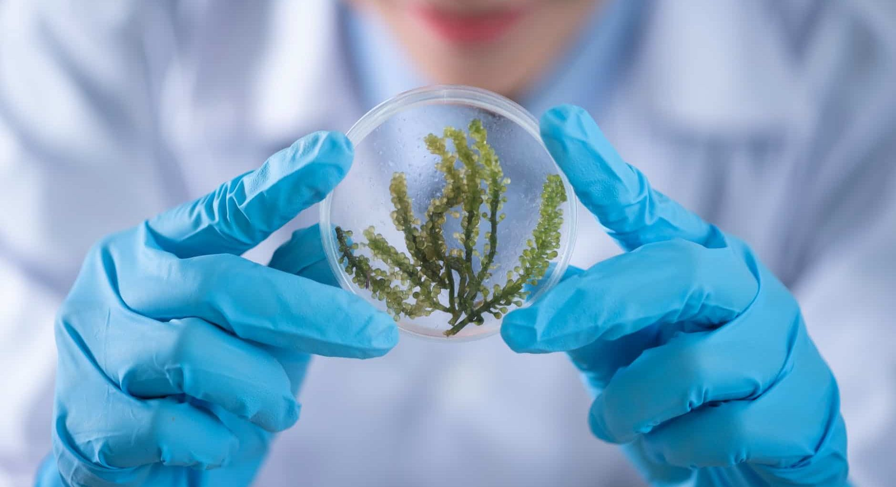

Introdução ao Estudo da Biologia Celular

A biologia celular é um ramo da biologia que estuda a estrutura, função e comportamento das células. Os cientistas que estudam a biologia celular são conhecidos como citologistas. O estudo da biologia celular é importante para compreender como todos os organismos vivos funcionam, desde células simples como bactérias até organismos complexos como os mamíferos.
Estrutura Celular
A célula é a menor unidade estrutural e funcional dos seres vivos. Existem diversos tipos de células, cada uma com sua própria estrutura e função. As células são geralmente classificadas como procarióticas ou eucarióticas. As células procarióticas, como as bactérias, não possuem um núcleo definido, ao contrário das células eucarióticas, que possuem um núcleo definido.
Função Celular
As células desempenham diversas funções que são essenciais para a sobrevivência dos organismos. As principais funções das células incluem a respiração, a nutrição, a excreção, a reprodução e a resposta a estímulos externos. Algumas células também podem produzir hormônios e outras substâncias químicas que desempenham um papel importante na regulação do metabolismo.
Processos Celulares
Os processos celulares são os processos que as células usam para realizar suas funções. Esses processos incluem a síntese de proteínas, a divisão celular, a respiração, a síntese de ácidos nucléicos e a digestão. Todos esses processos são realizados por complexos mecanismos moleculares que são controlados por genes.
Biologia Molecular
A biologia molecular é um ramo da biologia que estuda a estrutura e a função dos genes e como eles são regulados. A biologia molecular também estuda a maneira como as células lidam com os ácidos nucléicos, como o DNA e o RNA, e como esses ácidos nucléicos são transmitidos de uma geração para outra.
Conclusão
A biologia celular é um ramo da biologia que estuda a estrutura, função e comportamento das células. Esta área de estudo é importante para compreender como todos os organismos vivos funcionam. Os principais processos celulares incluem a síntese de proteínas, a divisão celular, a respiração, a síntese de ácidos nucléicos e a digestão. A biologia molecular é um ramo da biologia que estuda a estrutura e a função dos genes e como eles são regulados. Esta área de estudo é importante para compreender como as células lidam com os ácidos nucléicos e como esses ácidos nucléicos são transmitidos de uma geração para outra.